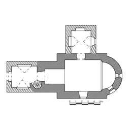
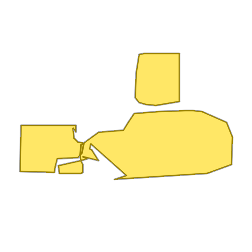
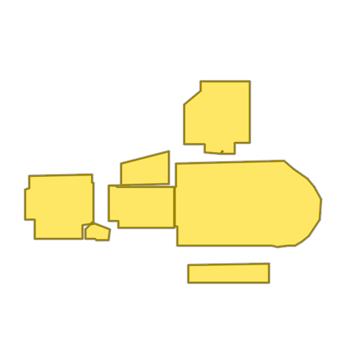

Church of Saint James



SIGGRAPH 2026
TL;DR: We introduce
Raster2Seq,
an approach that transforms rasterized floorplan images to
vectorized format using a
labeled polygon sequence representation.
Reconstructing a structured vector-graphics representation from a rasterized floorplan image is typically an important prerequisite for computational tasks involving floorplans such as automated understanding or CAD workflows. However, existing techniques struggle in faithfully generating the structure and semantics conveyed by complex floorplans that depict large indoor spaces with many rooms and a varying numbers of polygon corners. To this end, we propose Raster2Seq, framing floorplan reconstruction as a sequence-to-sequence task in which floorplan elements—such as rooms, windows, and doors—are represented as labeled polygon sequences that jointly encode geometry and semantics. Our approach introduces an autoregressive decoder that learns to predict the next corner conditioned on image features and previously generated corners using guidance from learnable anchors. These anchors represent spatial coordinates in image space, hence allowing for effectively directing the attention mechanism to focus on informative image regions. By embracing the autoregressive mechanism, our method offers flexibility in the output format, enabling for efficiently handling complex floorplans with numerous rooms and diverse polygon structures. Our method achieves state-of-the-art performance on standard benchmarks such as Structure3D, CubiCasa5K, and Raster2Graph, while also demonstrating strong generalization to more challenging datasets like WAFFLE, which contain diverse room structures and complex geometric variations.
Each example shows a pair of images: the input image and the output
reconstruction generated by
Raster2Seq. Swipe or click a label
to browse results across Structured3D-B, CubiCasa5K, and
Raster2Graph datasets, or navigate to
WAFFLE for qualitative comparisons on real-world
Internet floorplans.
*Structured3D-B denotes our binary raster version of
Structured3D, constructed from ground-truth annotations to
resemble standard floorplan drawings rather than the density-map
inputs used in the original dataset.
Please refer to our Interactive Visualization for more qualitative comparisons.
Quantitative comparison on Structured3D, CubiCasa5K, and Raster2Graph datasets, evaluating F1 scores across geometric predictions (Room, Corner, Angle) and semantic predictions (Room Semantic, Window & Door).
We report the Room F1 performance of RoomFormer, FRI-Net, and our model across varying numbers of polygons and corners on the Structured3D-B and CubiCasa5K datasets. Our method consistently demonstrates greater robustness as floorplan complexity increases.
Performance vs. floorplan complexity—as approximated by the total number of polygons (left) and the total number of corners (right). As illustrated above over Structured3D-B (top) and CubiCasa5K (bottom), our approach yields larger gains as the floorplan complexity increases.
We perform a cross-evaluation experiment across different train-test dataset configurations. We evaluate performance using metrics reported previously, using RoomF1 for the CubiCasa5K and Raster2Graph datasets and IoU for WAFFLE. Cross-evaluation heatmaps show performance across evaluation datasets (rows) and training datasets (columns), with hotter colors denoting higher performance.
Existing methods predicts all structural floorplan elements simultaneously, which makes them struggled to faithfully reconstruct structure and semantics of complex floorplan. Our key observation, motivating our framework design, is that floorplan elements can be effectively modeled as a sequence, directly capturing both spatial structure and semantic attributes. This allows us to decompose floorplan reconstruction into interpretable prediction steps that mirror the natural CAD design workflow, while naturally handling variable-length polygons.
📜 Labeled corner sequence representation. Each polygon is represented as a sequence of labeled corners — spatial coordinates paired with semantic labels (rooms, windows, doors) — and polygons are sorted left-to-right across the floorplan. This representation naturally accommodates inputs and outputs of variable lengths.
🔗 Anchor-based autoregressive decoder. The core of our framework predicts the next labeled corner by fusing image features and previously generated corners, guided by learnable anchors that steer attention toward informative image regions for efficient handling of complex floorplans.
🏷️ Token-level semantic supervision. A per-corner semantic classification loss applied to individual corner embeddings preserves semantic fidelity throughout autoregressive generation.

Given a rasterized floorplan image (left), Raster2Seq converts it into a vectorized representation as a labeled polygon sequence, with polygons delimited by special <SEP> tokens. The core component is an anchor-based autoregressive decoder that predicts the next token from image features (\(f_\text{img}\)), learnable anchors (\(v_\text{anc}\)), and previously generated tokens. Above, we visualize the first two predicted labeled polygons (in orange and pink, respectively).
@inproceedings{phung2026raster2seq,
title = {Raster2Seq: Polygon Sequence Generation for
Floorplan Reconstruction},
author = {Phung, Hao and Averbuch-Elor, Hadar},
booktitle={Special Interest Group on Computer Graphics and
Interactive Techniques Conference Conference Papers},
year = {2026},
}